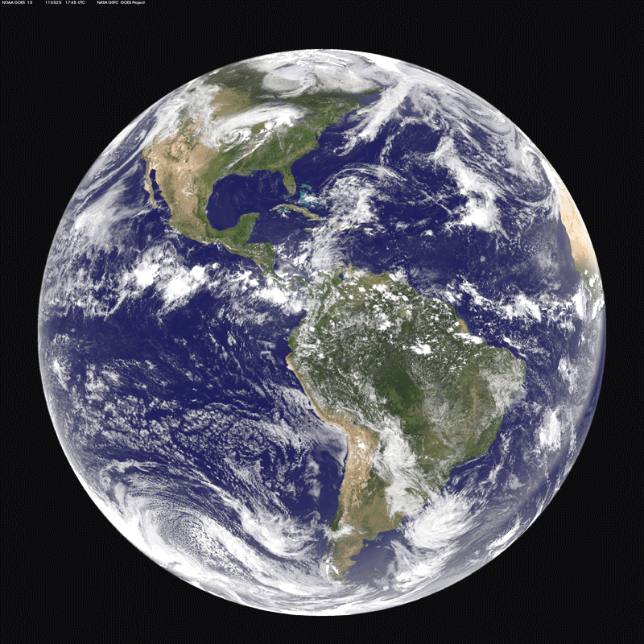

Hombre se queja de que la gente piense que el cielo es azul
A las 15:30 del 27 de junio de este año, Jose Manuel Norante ha presentado una queja formal al ayuntamiento de Gijon,
protestando ante la noción publica de que el cielo es azul, y exigiendo que se cancele el proyecto para
llevar a las aulas esta información. El ayuntamiento ha afirmado que valorara la petición seriamente antes de hacer nada.
Jose Manuel Norante ha expresado su descontento con la falta de iniciativa del ayuntamiento y planea presentar mas quejas en
el futuro.

Científicos descubren que la tierra es en realidad un armadillo espacial
Geólogos en la universidad de Josle han realizado experimentos que han demostrado la popular hipótesis de que
la tierra es, de hecho, un armadillo espacial invernando. Biólogos advierten sobre la posibilidad de despertar
al armadillo de su sueño, lo que podría tener catastróficas consecuencias sobre la vida en la tierra, y piden
que se cancele la construcción de los altavoces de 40 metros en la ciudad de Carce, políticos responden que
es imposible y que tendría un efecto terrible sobre la economía, ofrecen reducirlos a 37 metros.
Celebridad compra Australia
La famosa estrella de cine Kayle Jhonson ha completado la transacción que le otorgara posesión completa de
Australia y de todos sus habitantes, Kayle ha expresado entusiasmo y ha explicado que sus planes para el
país consisten en, textualmente “cazar una tonelada de canguros y hacerme una mansión con los cuerpos, voy a
montar unas fiestas loquísimas allí” expertos han mostrado preocupación sobre los efectos que esto podría
tener en la exportación anual de canguros a Europa.

Campeonato bianual de ver pintura secarse tiene un inesperado final
Este año, el campeonato bianual de ver pintura secarse ha sorprendido a todos los espectadores, cuando
diez veces campeón Arnold Talme ha perdido la final contra el novato Jack Oreca, después de un apasionante
duelo de 17 horas. Expertos afirman que el resultado estaba decidido en el momento en el que Talme salió
corriendo del estadio gritando, lo cual era una clara señal de que Oreca estaba consiguiendo la ventaja.
Talme ha decidido no presentarse al siguiente campeonato, ya que siente que nunca podrá volver a competir
al mismo nivel después de esta humillante derrota. Oreca ha admitido que no se esperaba poder derrotar al
veterano con tanta facilidad, y espera que esto sea el inicio de una brillante racha de victorias.